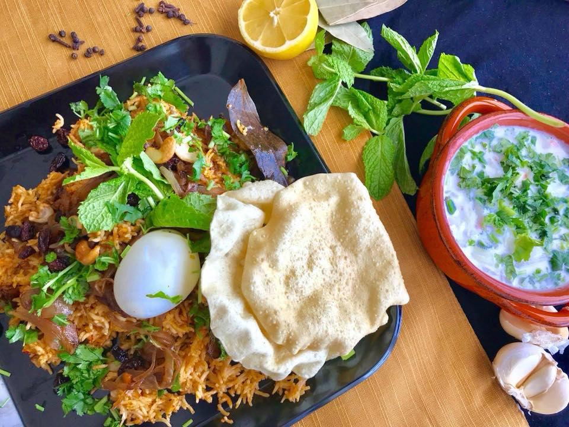

                                    <figure class="cards double">                                        
                                        <figcaption class="caption">
                                        
                                            <!--  Copy your recipie in here -->
                                            <h1><span style="color: #ff6600;">Mutton Biriyani</span></h1>
<p><strong>Ingredients</strong></p>
<ul>
<li>Basmati rice 4 cups</li>
<li>Mutton 1 lb</li>
<li>Onion 1 finely chopped</li>
<li>Cloves 4</li>
<li>Cinnamon 1 &ldquo;stick</li>
<li>Bay leaf 2</li>
<li>Cardamom 4</li>
<li>Ginger garlic green chili paste 1 tbsp</li>
<li>Lemon juice 1 tbsp</li>
<li>Saffron few strands</li>
<li>Water 5 -6 cups</li>
<li>Salt as required</li>
<li>Oil/Ghee as required&nbsp;</li>
</ul>
<p><strong>For Marinade</strong></p>
<ul>
<li>Mint leaves 1 cup</li>
<li>Cilantro 1 cup</li>
<li>Ginger shredded 1 tbsp</li>
<li>Garlic shredded 1 tbsp</li>
<li>Green chilis as required</li>
<li>Lemon juice 1 tbsp</li>
<li>Yoghurt 2 tbsp</li>
<li>Chili powder 1 tsp</li>
<li>Turmeric &frac12; tsp</li>
<li>Salt as required</li>
</ul>
<p><strong>For Garnish</strong></p>
<ul>
<li>Onion 1 thin long slices</li>
<li>Cashew nuts split about 1 tbsp</li>
<li>Raisins 1 tbsp</li>
<li>Boiled eggs 2 (Optional)</li>
<li>Cilantro finely chopped 1 tbsp</li>
<li>Mint 1 sprig</li>
</ul>
<p>&nbsp;<strong>Method</strong></p>
<p>Wash and drain rice. Soak saffron in a tbsp of milk. In a blender grind all ingredients for marinade and marinate the meat. Turn on the kettle to boil water needed to cook rice.</p>
<p>In a pressure cooker pour oil/ghee. Throw in the cloves, cinnamon, cardamom and bay leaves. Add onion and saut&eacute; till onion turns brown followed by ginger garlic paste. Add the rice and stir taking care not to break the rice, for about 2 - 3 minutes. Add the marinated meat. Stir well to mix the onion, rice and meat. Add salt and lemon juice followed by saffron. Add boiling hot water. The level of water should be just about &frac12; inch above rice. Cover and pressure cook.</p>
<p>In a pan heat oil/ghee. Roast the cashew nuts and raisins. Set aside. In the same pan add onion and saut&eacute; till it is deeply caramelized.</p>
<p>In a large deep tray transfer the cooked rice. Garnish with eggs, the caramelized onion, roasted raisins and cashew nuts. Sprinkle the chopped cilantro and place the mint in the center. Serve hot with Pappadoms and salad on the side!</p>
                                            <!-- Copy Up to here-->

                                        </figcaption>
                                       
                                    </figure>
                                    